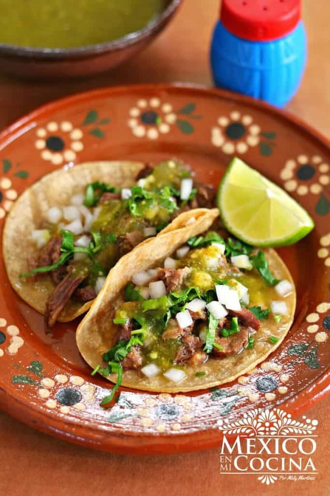

Tacos Mexicanos

Descripción
El taco es una comida típica de México, el cual consiste en una tortilla de maíz o de trigo que se rellena con
una variedad de elementos entre los que se incluyen carne de cerdo, res, pollo. También puede ser mariscos,
vegetales y queso y se se suele adornar con otros alimentos.
Se les agrega como decoración simple cilantro y cebolla picados, salsa picante y limón y se sirven con tortillas
de maíz o de harina. Es importante marinar las tiras de carne de res en limón y pimienta para concentrar su
sabor y luego sofreír rápidamente. Se suelen acompañar con jitomates picados, aguacate y cilantro.
Ingredientes
- 1 kilo y 1/2 de bistec de falda.
- 1 botella de Mojo Criollo
- 1/2 taza de cilantro finamente picado
- 2 limones
- 1/2 de sal
- 1 aceite vegetal
- 12 tortillas de maíz de la marca de tu preferencia
- Salsas de tu preferencia para acompañar
Pasos
- Corte la carne en trozos de 1/2 y transfiérala a un tazón grande no metálico o a un plato hondo. Vierta el
Mojo Criollo sobre la carne y asegúrese de que todas las piezas estén completamente sumergidas, cubra y
transfiera al refrigerador. Deje marinar por lo menos 2 horas, o hasta 24 horas.
- Aparte en un tazón pequeño mezcle: la cebolla, el cilantro, el jugo de limón y la sal. Revuelva todo hasta
que se mezcle, cubra y refrigere hasta que esté listo para su uso.
- Seque la carne usando toallas de papel. Caliente el aceite en una sartén grande, a fuego
medio-alto. Añada la carne y cocine en lotes, volteando ocasionalmente hasta que la carne esté bien dorada y
completamente cocida, cerca de 5 minutos por lote (asegurándose de no saturar el sartén). Transfiera la
carne a un plato de servir y cúbrala con papel aluminio para mantener el calor.
- Caliente a fuego medio-alto la plancha de asar, o un sartén de hierro, u otro sartén que sea grande. Añada
suficientes tortillas para cubrir la superficie de la plancha; dejando un poco de espacio entre cada
tortilla. Cocine volteando una vez, hasta que las tortillas se tornen ligeramente asadas, calientes y
flexibles, por unos 30 segundos cada lote.
- Para armar los tacos: llene cada tortilla con la carne, agregue la mezcla de cebolla y cilantro reservada,
agregue la salsa para tacos si lo desea y para terminar, sirva con rodajas de limón.
- Disfute sus tacos :)